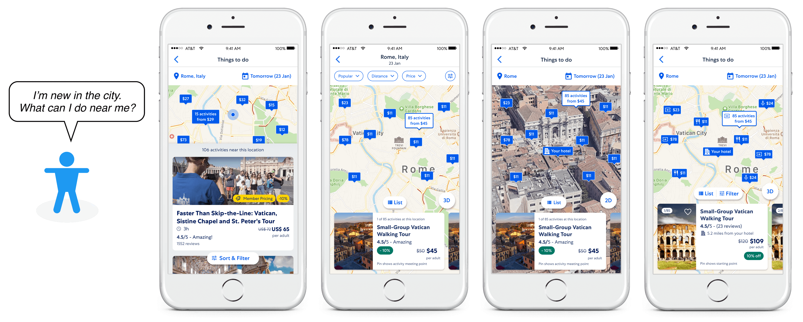
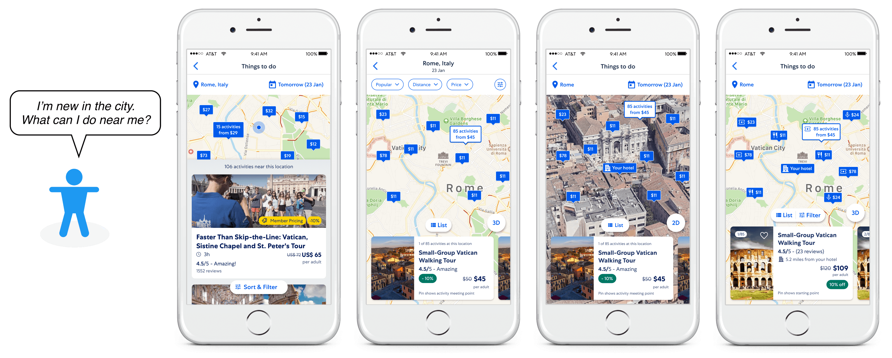
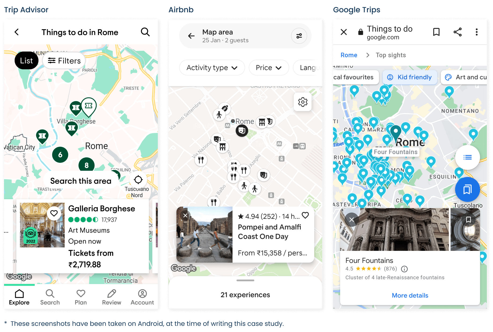
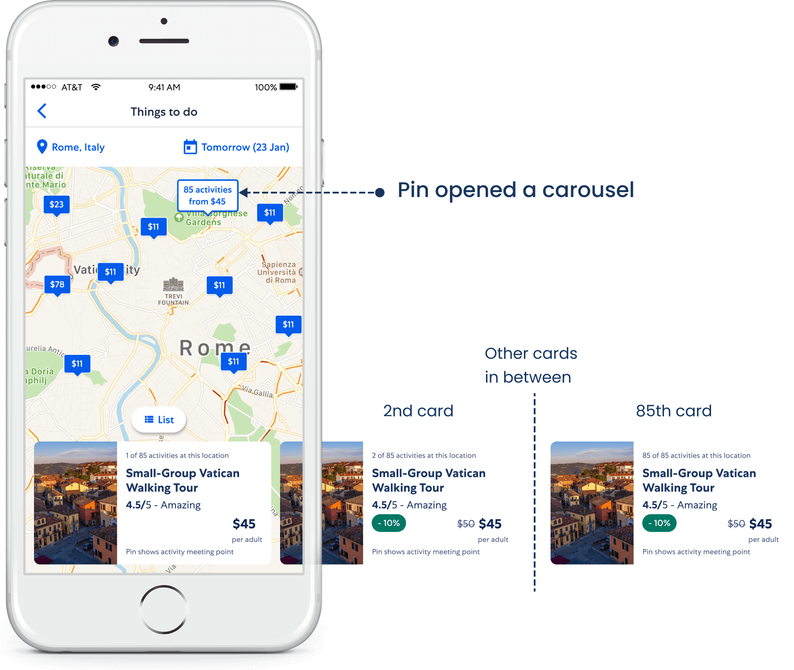
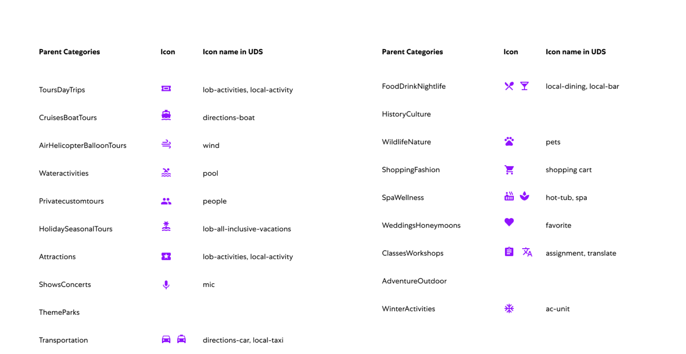

Finding nearby activities for in-trip travelers
Expedia, Local Experts, 2019-2020
A map view for travelers to help them orient themselves in a new city, and discover activities near them.
Expedia, Local Experts, 2019-2020
A map view for travelers to help them orient themselves in a new city, and discover activities near them.
Some travelers plan everything when they travel. Others book flights and hotels before traveling and decide on the activities when they reach the destination. These travelers are known as in-trip travelers.
Studies done by the UX Research team had revealed that in-trip travelers were hard-pressed for time, and wanted to find an activity near them.
The existing booking flow used a list view to show the activities searched by a user.
Analytics had shown that in-trip users had nearly 80% of searches and 50% of bookings on the app.
UX Research also did a competitive study, and we found that all competitors offered a map view to show the activities.
Within Expedia, the Hotels team had also used a map view to boost their sales.
So our team was confident in the value of this user need, leading to the hypothesis.
Data supporting a map view.
Hypothesis for a map view.
I was part of a squad team, spread across in Australia, India, and USA, comprising a Product Manager, a TPM, and Software Developers, and me as a UX Designer.
Outside of the squad, we had the advantage of seeking help from a User Researcher, a Content Strategist, and a Data Scientist.
Remote teams.
As a UX Designer, I was responsible for
My role
The project was initiated as a MVP, wherein we wanted to see whether travelers will find maps useful, before building the complete experience.
The analytical data gathered from the MVP, and the insights from a user study, led to further design directions for subsequent iterations.
Design decisions based on quantitative and qualitative data.
The study was done to learn how the competitors had solved this user need.
Illustration for Competitive Study
Studied the findings to learn how this problem was solved in the industry -
MVP: Will travelers find map usable?
Measuring user behaviour
I took over the designs made by the previous designer on the team. These were similar to the designs done by the Hotels team and used a cluster pin behavior. When a user would tap on a cluster pin, it would break down to multiple pins at a zoomed-in level.
The cluster pin was a UI component within the company-wide design system, Universal Design System (UDS).
Cluster pin in design system breaks down to multiple pins at a zoomed-in level.
Some pins did not break further.
Use of actual data to populate the map pins resulted in two problems:
While developers focused on the first problem, I focused on handling the unbreakable pin.
Why won't the pin break?
Data showed that nearly 35% of pins did not break further. It happened because a single supplier could supply multiple activities from a single location.
Hotels team did not face this issue as there is only one hotel at a location. It was not the case with activities.
How did I solve it?
I sketched out, and then detailed, a few possible options:
#1 - Bottom sheet, with 2nd card partially visible, scrolls over the map view as a list view.
#2 - Bottom sheet for single activity pin, and a horizontal carousel for multiple activities.
#3 - Horizontal carousel for all types of pins.
#4 - Horizontal carousel for all types of pins, and for multiple activities an option to see all activities in a list view.
Since this was close to launch, we agreed to use (#3) a horizontal carousel for all pins, as it was available in the design system, and could be readily used by developers. Other options were not in the design system and needed more development time.
Horizontal carousel was available in the design system, and could be readily used by developers.
Interestingly, post launch analytics showed that most users did not go past 3 cards, and in a user study done by the UXR team, users requested to see a list view after first few cards. So option (#4) was what users needed.
Though the engagement with the map button was low (~3%), the conversion was nearly double for Map users (~8%) than the List view users (~4%).
Overall, we saw an increase of 11% in orders, 3% in CVR, and 6% in Gross Purchase.
This validated the hypothesis for the need of a map view.
Usage data validated the hypothesis.
Usage data & a user study done post-launch gave insights for further enhancements.
Insights for further enhancements.
To increase prominence of Map on Search Results page, we added a mini-map above the search listings.
In case users would not tap on Map, and would scroll down, we thought of a slim card which would appear when a user scrolls down. Here we wanted to show the benefits of using a map view.
We had a small entry to map view. Mini-map gave users a glimpse inside the map view.
To make maps engaging, we wanted to give users a sense of what was around them, using their current location or their booked hotel.
Once they entered the map view, they could also see the nearby view in 3D.
Leveraged traveler data to show activities near them.
A 3D view to match with real world.
We tried two variations.
First, used generic filters provided by the API to create a cohesive experience irrespective of device type, mobile or desktop.
Generic filter offered a broad range of options to narrow down on an activity.
Second, used quick filters to bring up the filters requested by travelers in the user study: price, proximity, and popularity.
Frequently used filters were placed outside the generic filter for easy reach.
Travelers wanted to know how far they need to travel for an activity. The task was to show the distance from their current location or booked hotel.
Show distance on map card.
Just before this iteration, a change in the design system led to complications on the map card.
Change in the design system led to complications on the map card.
Re-designed the map card, by exploring different variations, keeping in mind the hierarchy of the elements, and few language translations which could lead to a longer text.
Redesigned map-card keeping in mind the hierarchy of all elements.
We wanted to explore icons on the map pins, as done by competitors and requested by some users.
Exploration of icons for activity type.
Did an audit of the activity categories and the icons already available in the design system. The next task was to create the missing icons.
Some icons were available in design system.
Unfortunately, the pandemic happened, and things came to a surprise halt.
The learnings were -